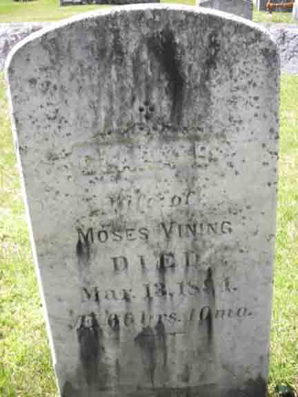
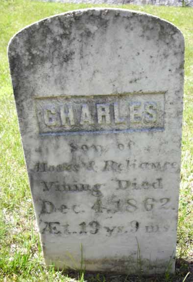

Census Data
| 1840 | 1850 | 1860 | 1870 | 1880 | 1890 | 1900 | |
| Moses P. Vining | M 20–30 | 38 | 47 | 55 | 67 | dead | |
| Reliance T. (Soule) Vining | F 15–20 | 29 | [dead?] | ||||
| Clarinda (B[riggs?]) | 43 | 53 | ? | dead | |||
| Corydon Vining | 8 | 17 | not living in this household | ||||
| Charles Vining | 1 | 10 | dead | ||||
| Ella E. Vining | 6 | 16 | 26 | married and living in separate household | |||
| Charles Ernest Lindel Vining | 2 | 12 | ? | ? |


Death Data
Gravestones for Moses P. Vining, first wife Reliance T. (Soule) Vining, and second wife Clarinda ([Briggs?]) Vining, in Riverside Cemetery, Farmington, Franklin County, Maine (from Find A Grave):

Research Opportunity
According to the 1850 census, the age of Charles Vining, son of Moses P. Vining and Reliance T. (Soule) Vining, was 1 year. This is consistent with the 1860 census report of 10 years for his age. (Census records are often approximations of true ages.) His gravestone, however, reported his age at death (4 December 1862) to be 19 years and 9 months. This would have made Charles approximately 7 years old in 1850 and around 17 in 1860. Clarification is needed here.